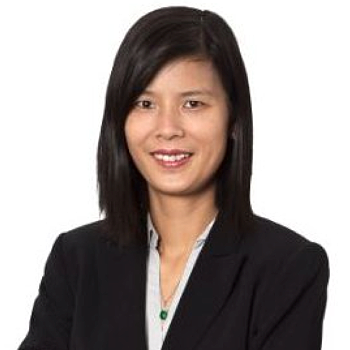

<div class="container">
    <div class="row">
        <div id="speaker-detail" class="col-lg-6 col-lg-offset-3">
            <div class="row">
                <button title="Close (Esc)" type="button" class="mfp-close">×</button>
                <div class="col-md-4 col-lg-4">
                    
                    <br />
                </div>
                <div class="col-md-8 col-lg-8">
                    <h2>Charley Lu, MS, MBA, 呂全偉 經理</h2>
                    <h3>Senior Business Development Manager</h3>
                    <p>Mr. Lu is currently the Senior Business Development Manager at Taiwan Liposome Company (TLC), a publicly listed specialty biopharmaceutical company focusing on lipid-based nanoparticles drug delivery technologies. He leads business development and alliance management activities. Previously, Mr Lu served as the Principal of Strategic Initiatives at Carantech, Inc. Carantech was a spinout from the University of California, San Francisco developing neuroprotective therapies for Multiple Sclerosis patients.  Mr Lu shared fundraising and operating responsibilities with the founding team.</p>
                    <p>Mr. Lu is a member of Mayor’s Biotech Advisory Council in San Francisco. He earned his MBA from the Johnson School at Cornell University focusing on venture capital and private equity and his MS from Northwestern University studying bioinformatics and immunology. Prior to Cornell and Northwestern, Mr. Lu independently led autoimmune disease research at the University of California, San Francisco Medical Center while earning his BA in Integrative Biology with emphasis in Neurobiology and Endocrinology from the University of California, Berkeley. He was the award winner at Cornell’s Big Idea Business Plan competition and the Jonas Weil Entrepreneurship Fellow.</p>
                    <p>Mr. Lu is an active and recognized leader in the community. He has received multiple commendations for his public outreach, fundraising, and volunteering efforts at the Greater Bay Area Make-A-Wish Foundation granting wishes to children with life-threatening illnesses.</p>
                </div>
            </div>
        </div>
    </div>
</div>
